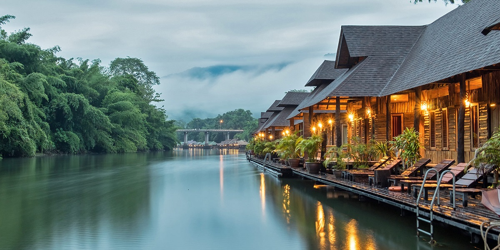
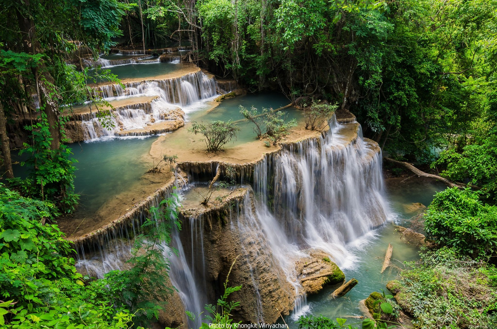
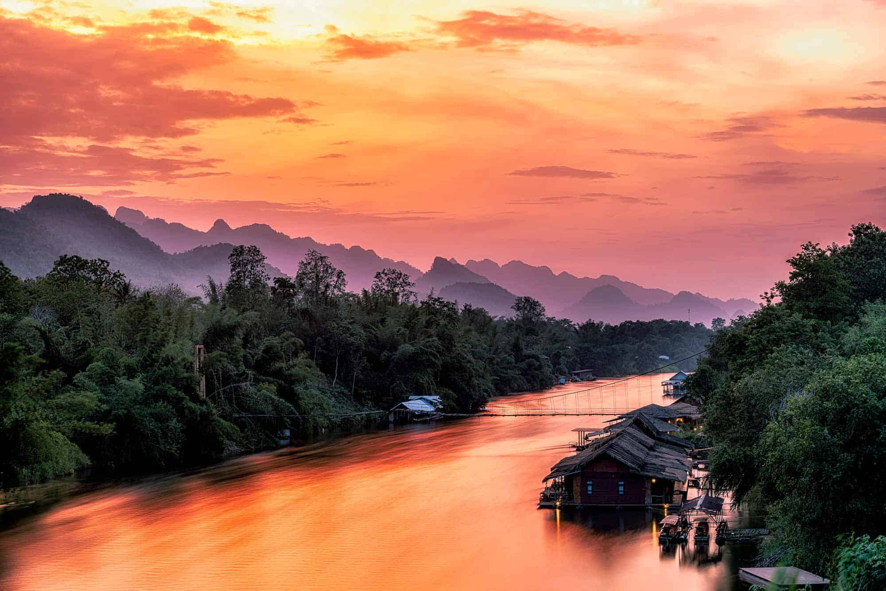
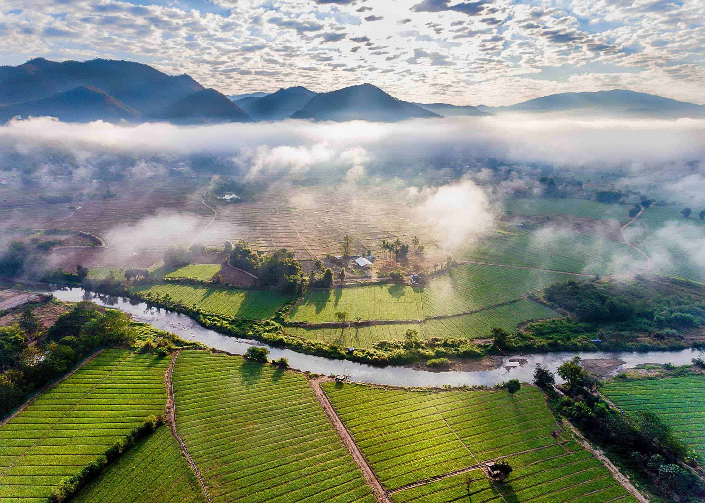
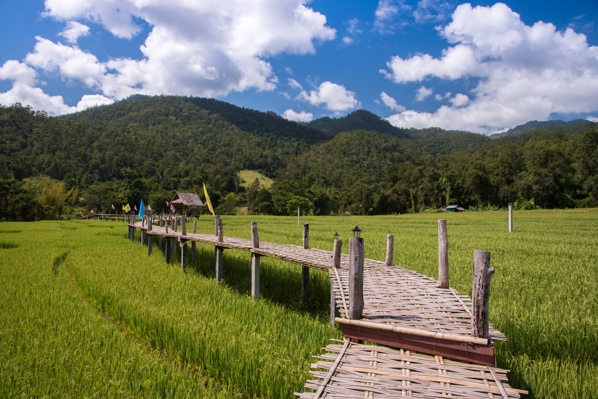
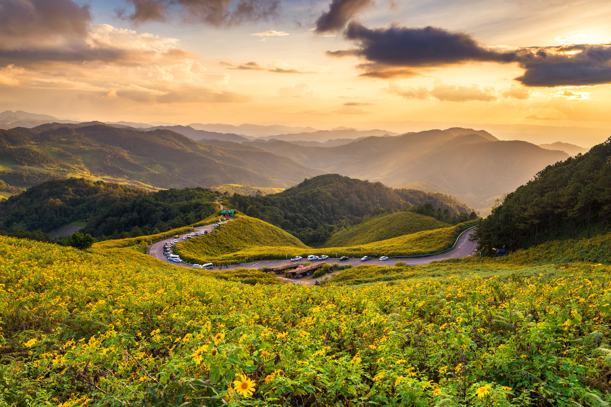
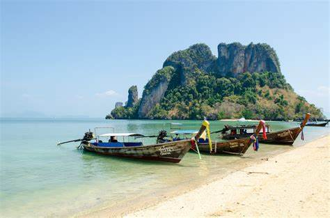
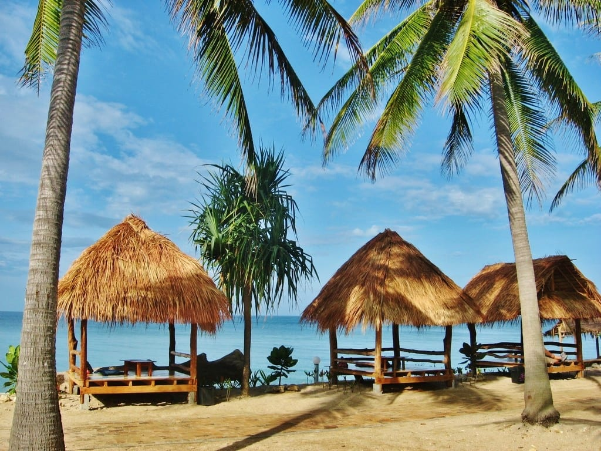
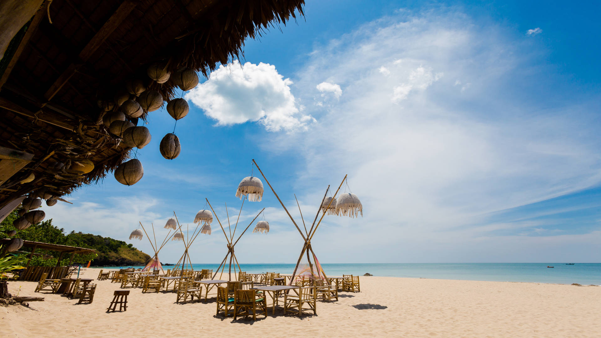

Kanchanaburi, located in western Thailand, is a captivating destination that seamlessly blends natural beauty with historical significance, making it a must-visit for tourists seeking a diverse and enriching experience. Renowned for the iconic Bridge on the River Kwai, a poignant relic from World War II, the town offers a somber yet enlightening glimpse into history. Nature enthusiasts will be enchanted by the lush landscapes, with the Erawan National Park boasting emerald green ponds and cascading waterfalls. The River Kwai itself is a tranquil waterway that meanders through the region, offering picturesque boat rides. Visitors can explore the War Cemetery and JEATH War Museum for further insights into the area's wartime past. With a harmonious blend of history, culture, and natural wonders, Kanchanaburi provides a unique and rewarding escape for travelers.



Nestled in the mountains of northern Thailand, Pai is a charming and laid-back town that has become a favorite destination for travelers seeking tranquility and natural beauty. Surrounded by lush, green landscapes, Pai offers a serene escape from the hustle and bustle of urban life. The town is known for its picturesque countryside, hot springs, and waterfalls, such as the iconic Pai Canyon and Mo Paeng Waterfall. The Pai River flows gently through the town, providing a scenic backdrop for leisurely strolls and bamboo rafting adventures. Pai's vibrant night market showcases local handicrafts, delicious street food, and a relaxed atmosphere. With its bohemian vibe, friendly locals, and a variety of outdoor activities, Pai has become a haven for those looking to unwind and connect with the natural beauty of northern Thailand.



Koh Lanta, situated in the Andaman Sea off Thailand's southwestern coast, is a tropical paradise that beckons with its pristine beaches, crystal-clear waters, and a laid-back island atmosphere. Comprising several islands, the most popular being Koh Lanta Yai, this destination offers a perfect blend of relaxation and adventure. With its long stretches of white sand, vibrant coral reefs, and lush jungles, Koh Lanta provides a diverse range of activities for beach lovers and nature enthusiasts alike. Snorkeling and diving opportunities abound, allowing visitors to explore the underwater wonders of the Andaman Sea. The island also retains a cultural charm, with local fishing villages, traditional markets, and a warm, welcoming community. Whether you're seeking sun-soaked tranquility or thrilling water adventures, Koh Lanta promises an idyllic escape for every type of traveler.